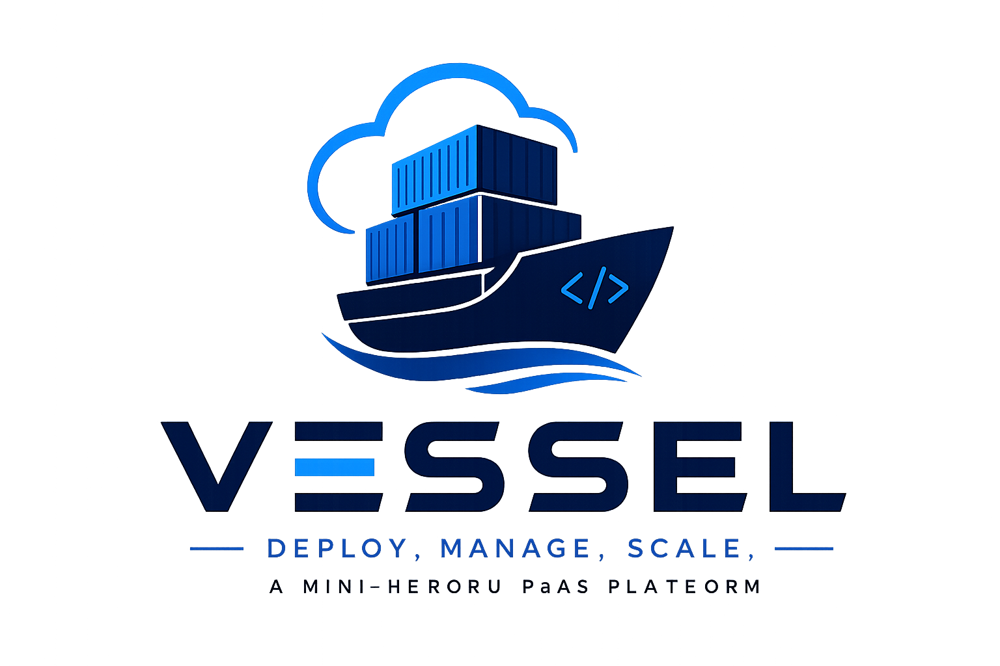

Vessel ships services with the clarity of a clean release pipeline.
Build, release, run, and observe without overhead. Vessel gives small teams a technical PaaS with immutable releases, audit logs, and stable rollbacks.
45s
Average deploy
1 click
Rollback
0 config
Service templates


Trusted By
120+
Releases tracked
3 mins
Median build time
99.9%
Target uptime
Platform Core
Everything you need to run a clean release lifecycle.
Vessel models the real Heroku flow with transparent build logs, release gates, and runtime visibility.
Build
Language detection, dependency caching, and build logs for every release.
Release
Immutable slugs, release phase checks, and one click rollbacks.
Run
Isolated containers with predictable resource limits for web and worker processes.
Observe
Centralized logs, request traces, and live runtime metrics without plugins.
Runtime
Predictable, isolated execution for every service.
Configure web and worker types, scale replicas, and keep the runtime simple with clear process contracts.
- Immutable releases to prevent drift.
- Scoped env variables per app and pipeline.
- Graceful shutdown hooks for zero data loss.
Runtime Profile
Deploy Pipeline
From commit to release in a single, readable flow.
Use the CLI or connect a repo. Every step produces an audit trail you can replay.
$ vessel login
$ vessel init
$ git push vessel main
-----> buildpack detected: nodejs
-----> compiling, caching, releasing
-----> release v12 created
-----> web process running on port 8080Release Manifest
app: vessel-starter
stack: nodejs
processes:
web: npm start
worker: npm run jobs
healthchecks:
/health: 200Control Plane
Clear configuration without a long YAML parade.
Define processes, ports, and health checks in a compact manifest. Vessel keeps the rest in code with no hidden infrastructure layers.
- Release events and audit log for every deploy.
- Integrated registry for build artifacts.
- Policy ready for classroom or demo environments.
"Infrastructure should be calm, transparent, and repeatable. Vessel keeps the pipeline clear so your team stays focused."
Security And Compliance
Operational safety built into every release.
Vessel enforces clean boundaries with auditable releases and scoped secrets.
Isolated Runtime
Each release runs in a locked container with explicit CPU and memory limits.
Audit Trail
Every build and release event is recorded with a searchable timeline.
Scoped Secrets
Environment variables are versioned and bound to the release that needs them.
Integrations
Connect your pipeline to the tools you already use.
Git Providers
Trigger builds from GitHub, GitLab, or local pushes.
Container Registry
Store build artifacts and promote releases between pipelines.
Datastores
Connect Postgres, Redis, or object storage with clean env bindings.
Webhooks
Send deploy events to chat, status pages, or CI systems.
Testimonials
Trusted by instructors and student teams.
"Vessel keeps our class deployments consistent. Students ship faster and the logs are clear."
Systems Instructor
Virtual Systems Lab
"We finally have a predictable Heroku-style workflow for our capstone apps."
Capstone Team Lead
Cloud Projects
Changelog
Recent platform updates.
May 2026
v1.0 - First public release
Release pipeline, build logs, rollback flow, and runtime profiles.
Apr 2026
CLI and manifest support
Added CLI deploys, release manifests, and process definitions.
Mar 2026
Metrics and log streaming
Live log tailing with deploy events and runtime metrics.
SLA And Uptime
Target uptime built for classroom scale.
Status checks, health probes, and automatic restarts keep services running.
99.9%
Target uptime
24/7
Health checks
Pricing
Simple tiers for labs, teams, and demos.
Start free, upgrade for more runtime and releases. Designed for educational scale.
Starter
$0
For quick demos and solo projects.
- 1 app, 1 pipeline
- 1 web process
- Shared runtime
Team
$19
For class teams and course projects.
- 5 apps, 3 pipelines
- Web and worker processes
- Release history, logs
Lab
$49
For cohort deployments and labs.
- 15 apps, 10 pipelines
- Isolated runtime pools
- Metrics and alert hooks
FAQ
Operational clarity without the guesswork.
Answers to common questions about the Vessel platform model.
Is Vessel a full Heroku replacement?
Vessel is a focused mini-heroku platform built for learning and small deployments. It mirrors the core flow without enterprise complexity.
How do rollbacks work?
Each release is immutable. You can roll back by selecting any prior release without rebuilding.
What runtimes are supported?
Vessel supports common web stacks through buildpacks. Node and Python are first class and more can be added.
Get Started
Deploy your next demo in minutes.
Run your first mini-heroku release with clean logs, stable rollbacks, and clear runtime control.